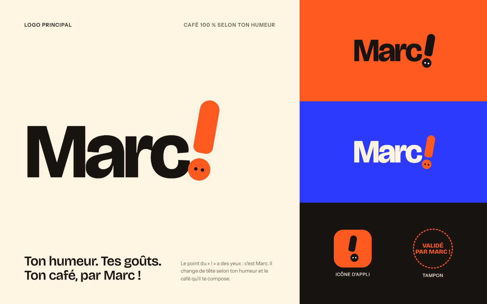
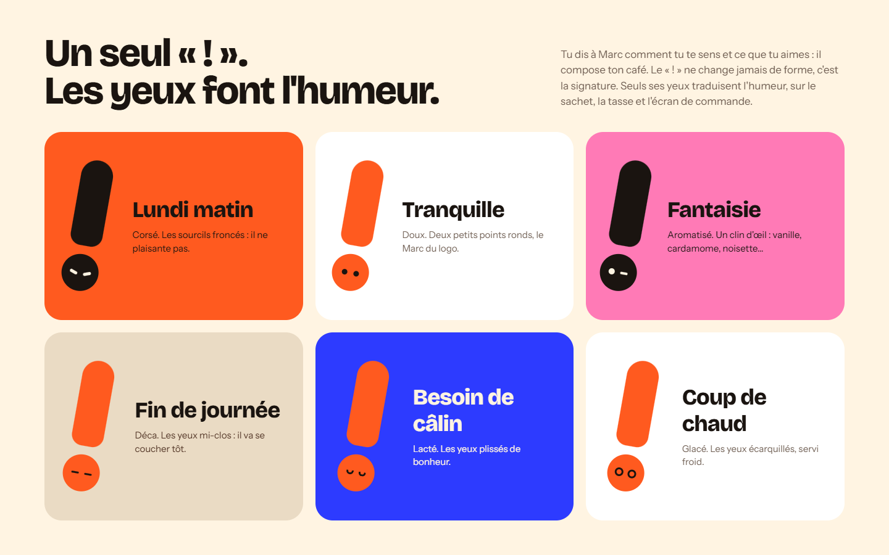
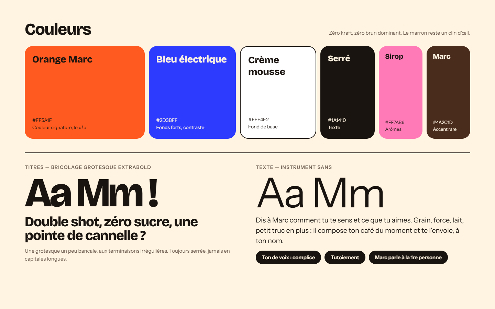

Marc, c’est le marc de café, et c’est un prénom. La marque devient un personnage un peu décalé qui a un avis sur ton café. Tu lui dis comment tu te sens et ce que tu aimes, il compose ton café et te l’envoie à ton nom. Pour sortir du kraft et du brun du rayon, une palette franche : orange, bleu électrique et crème.
Un seul « ! », six regards
Le point du « ! » a des yeux : c’est Marc. Sa forme ne change jamais, seuls ses yeux traduisent l’humeur.
Sortir du kraft
Orange Marc, bleu électrique, crème. Le brun reste un clin d’œil, en accent rare.
Un personnage complice
Tutoiement, phrases courtes, Marc parle à la première personne : « Pas de réunion avant la 2e tasse. »





Le site de vente. On choisit son humeur : toute la page change de couleur et Marc change de regard. On compose ensuite son café (force, lait, arôme, en grains ou moulu), on le signe de son prénom, et le sachet se met à jour en direct.
Choisis ton humeur, compose ton café, signe-le de ton prénom et passe commande (commande simulée).